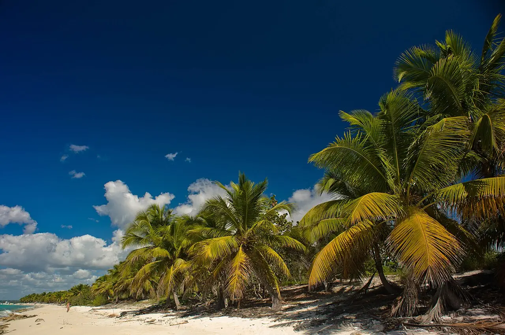

Isla Catalina
La Romana, République dominicaine · snorkeling, plongée, baignade

Petite île classée monument naturel, à environ 2 km de la côte de La Romana. Ses sites les plus connus sont « The Wall », un tombant pour les plongeurs, et « The Aquarium », un récif peu profond pour le snorkeling.
- Lieu
- La Romana, République dominicaine
- Niveau
- Débutant
- Activités
- snorkeling, plongée, baignade
- Type d'eau
- Mer / océan
- Coordonnées
- 18.36, -69.02 (position approximative du secteur)
Dangers à connaître
- Nombreux bateaux d’excursion au mouillage : reste près de ton groupe et bien visible.
- Courant possible le long du tombant : plongée encadrée recommandée.
Le conseil d'Ocean Buddy
Pars tôt avec un centre de Bayahibe ou de La Romana, avant l’arrivée des bateaux d’excursion et de croisière.
Ouvrir dans Ocean Buddy Télécharger sur l'App Store
Source : Fiche Ocean Buddy · septembre 2026 · à vérifier localement.